生成式 AI 工作應用班｜Part 5 用 AI 整理訊息，交給 Make 自動處理｜5-1（第二篇）
讓 Make 接手：多一張需求單，就記一筆處理紀錄
上一篇，你替禾光建好了跨部門需求單：同事一送出，試算表就自己多一列。那是 Google 表單內建的流程，它只會做這一件事。需求單接下來還要判斷部門、寫摘要、通知負責的人，這些步驟要靠一個能讓你自己決定「接著做什麼」的工具，也就是 Make。
這一篇先讓 Make 做最簡單的一步：每收到一張需求單，就在另一個分頁「處理紀錄」記下一筆，寫上誰送的、要什麼、處理到哪了。為什麼要另外記？因為「表單回覆」只是同事填了什麼，「處理紀錄」才是禾光這邊處理到哪裡。後面幾課，判斷好的部門、寄出的通知，都會寫進這裡；負責的人打開它，就知道哪些單已經有人接手。
讀完這一篇，你會學會：在 Make 建一條「只要……就……」的流程：選好觸發、選好動作、把欄位對應過去，執行一次並看懂結果；也知道 Make 為什麼不會把同一張單記兩次。
先看需求單的資料放在哪裡
動手建流程之前，先打開上一篇連到表單的那份試算表，看看王小美那張單變成了什麼樣子。等一下 Make 要讀的，就是這張表。
Google 表單會照你設的題目，在試算表裡排好欄：每一題變成一欄，題目就是那一欄最上面的表頭；最前面再自動多加一欄「時間戳記」，記下送出的時間。這張表放在一個叫「表單回覆 1」的分頁裡，分頁名稱是 Google 自動取的。每有人送出一張單，下面就多一列。
| A | B | C | D | E | |
|---|---|---|---|---|---|
| 1 | 時間戳記 | 申請人姓名 | 申請人 Email | 需求內容 | 希望完成日期 |
| 2 | （你送出的時間） | 王小美 | xiaomei.wang@example.com | 下週三下午兩點的部門會議要借投影機和兩條延長線，地點在 7 樓會議室。 | （你填的日期） |
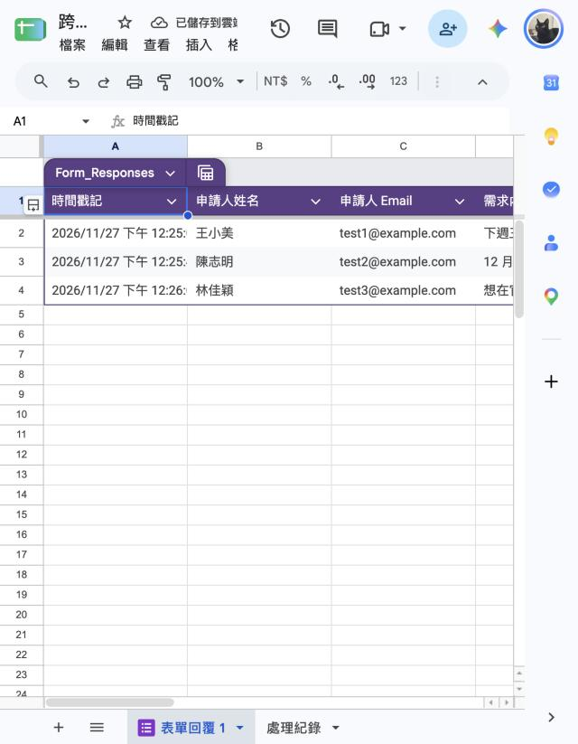
講師的練習檔多填了幾張測試單；你的表單回覆只會有王小美那一列。
最上面的 A、B、C、D、E 是試算表的欄位字母。等一下 Make 讀這張表時，會把第 1 列的表頭當成欄位名稱，後面加上欄位字母，例如「申請人姓名 (B)」；第 2 列以下的每一列，就是 Make 讀進來的一筆資料，也就是一張需求單。所以 Make 裡會出現的那些欄位，不是 Make 自己想出來的，就是你上一篇設的表單題目。
Make 怎麼把「只要……就……」排出來
上一篇說過，能寫成「只要……就……」的步驟，交給流程。這一篇要做的那一步是：只要「表單回覆」多一列，就在「處理紀錄」寫一列。
在 Make 裡，一條流程叫做一個 scenario，由幾個模組排成一排，每個模組只做一件事。排在最前面的模組叫觸發，負責「只要……」：它一直盯著某個地方，有新東西出現就開始；後面的模組是動作，負責「就……」。這一篇的流程只有兩個模組：
| 句子裡的哪一段 | Make 的模組 | 它做什麼 |
|---|---|---|
| 只要「表單回覆」多一列 | Google Sheets 的 Watch New Rows（監看新增的列） | 盯著「表單回覆 1」這個分頁，有新的一列就把它讀進來 |
| 就在「處理紀錄」寫一列 | Google Sheets 的 Add a Row（新增一列） | 在「處理紀錄」最下面加一列 |
兩個模組中間，還要告訴 Make「寫什麼」：處理紀錄的「申請人姓名」要填表單回覆的哪一欄、「需求內容」要填哪一欄。這叫對應。就像你平常從一張表抄到另一張表，眼睛看左邊、手寫右邊；對應好之後，Make 每一次都照這樣抄，不會抄錯欄。
還有一件事要先知道：Make 會記得自己讀到哪一列。第一次執行時，它會問你要從哪裡開始讀；讀過的列，下一次就不會再讀。所以同一張需求單不會被記兩次。這一點你會在最後一步親眼看到。
開始動手
動手前先知道三件事。
- Make 的畫面是英文：按鈕第一次出現時，講義會附上中文意思。
- 登入：用你建需求單的那個 Google 帳號登入 Make，第一次登入就會建好免費帳號。
- 截圖：圖裡的試算表、連線名稱是講師的練習檔，和你取的名字可能差幾個字，按鈕和欄位的位置是一樣的。
- 點數：免費方案每月有 1,000 點，流程每跑一次都會用掉一些；這一篇的流程每處理一張單，大約用掉 2 點。練習時都用「Run once」（執行一次）手動跑，流程的自動排程保持關著。
在試算表加一個「處理紀錄」分頁
- 打開上一篇連到表單的試算表，就是名稱後面有「(回覆)」的那一份。
- 按左下角的 ＋，新增一個分頁。
- 在新分頁的名稱上按右鍵，選「重新命名」，改成
處理紀錄。 - 在第 1 列，從 A1 開始依序打：
收到時間、申請人姓名、需求內容、處理狀態。
做完會看到：下方有兩個分頁「表單回覆 1」和「處理紀錄」，處理紀錄的第 1 列有四個表頭。
登入 Make
- 在瀏覽器網址列輸入
make.com，按 Enter。 - 按 Sign in（登入）。
- 按 Continue with Google（用 Google 繼續），選你的 Google 帳號。
做完會看到：Make 的首頁，左邊有一排紫色的選單。
建一條新流程
- 點左邊選單的 Scenarios（流程）。
- 點右上角紫色的 Create scenario（建立流程）。視窗比較窄時，這個按鈕只會顯示一個「＋」。
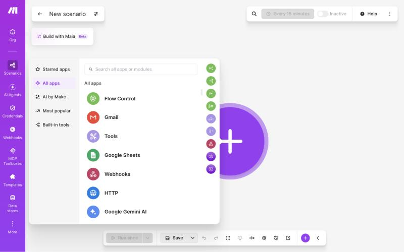
做完會看到：一張空白的畫布，中間有一個大大的「＋」，旁邊已經跳出選 App 的視窗。
加第一個模組：監看新增的列
- 在選 App 的視窗點 Google Sheets。清單裡沒看到的話，在上方搜尋框打
Google Sheets。 - 在模組清單點 Watch New Rows（監看新增的列）。
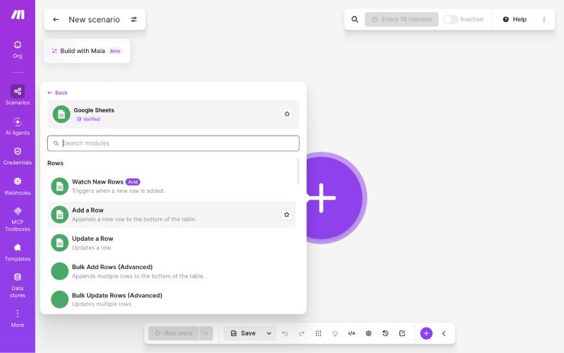
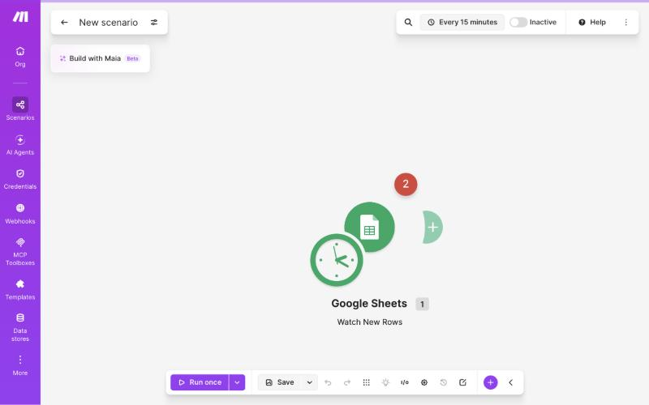
做完會看到：畫布上出現一個綠色的 Google Sheets 圓形模組，下面寫著 Watch New Rows，左下角有一個小時鐘：這就是觸發。
讓 Make 連上你的 Google 帳號
- 點一下這個模組，打開它的設定。
- 在 Connection（連線）那一欄，按 Create a connection 或 Add（新增連線）。
- 把 Connection name（連線名稱）改成
Google 連線（練習）。 - 按 Sign in with Google（用 Google 登入）。
- 在跳出的 Google 視窗選你的帳號，按「允許」。
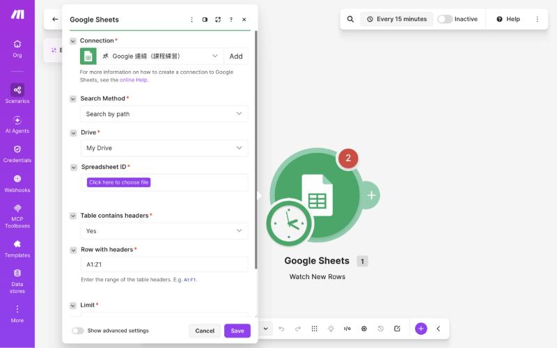
做完會看到：Connection 那一欄顯示「Google 連線（練習）」，下面多出幾個欄位。
選要監看的試算表和分頁
- 在 Spreadsheet ID（試算表）那一欄，按 Click here to choose file（點這裡選檔案）。
- 從清單點名稱後面有「(回覆)」的那一份試算表。
- 在 Sheet Name（分頁名稱）選 表單回覆 1。
- 其他欄位不用動，按右下角的 Save（儲存）。
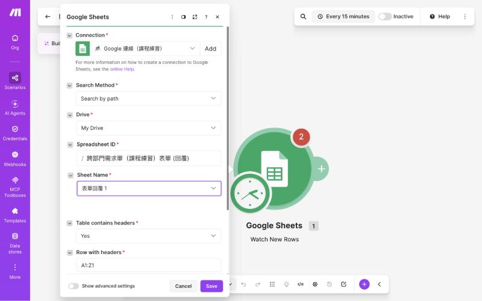
做完會看到：跳出一個「Choose where to start」（選擇從哪裡開始）的小視窗。
選從哪裡開始讀
- 選 All（全部）。
- 按 Save。
為什麼選 All：上一篇你已經填了王小美那一張，它現在就在表單回覆裡。選 All，Make 會從第一張開始讀，才讀得到它；如果選了只讀之後的新資料，這張就會被跳過。
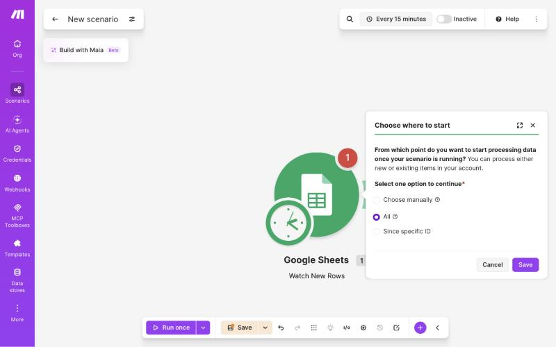
加第二個模組：新增一列
- 把滑鼠移到第一個模組右邊，按冒出來的 ＋。
- 點 Google Sheets。
- 點 Add a Row（新增一列）。
- 點一下這個新模組，打開它的設定。
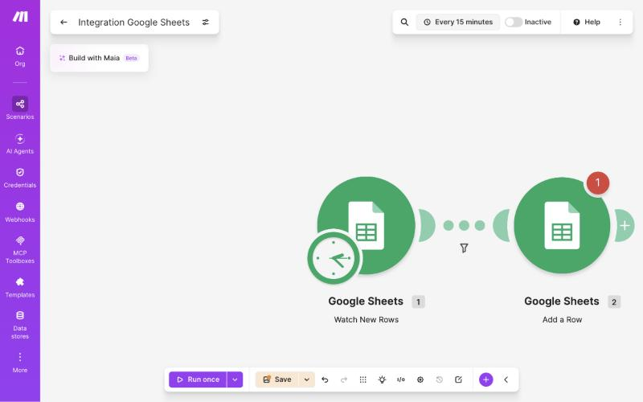
做完會看到：兩個綠色模組之間有一條點點連起來的線；Connection 已經自動帶入「Google 連線（練習）」。
選要寫進去的分頁
- 在 Spreadsheet Name（試算表）按 Click here to choose file，選同一份「(回覆)」試算表。
- 在 Sheet Name 選 處理紀錄。
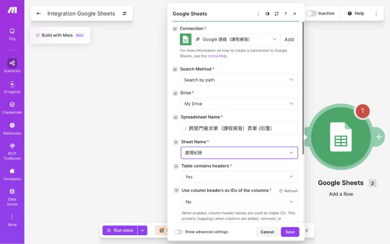
做完會看到：設定下方出現 Values in columns（各欄的值），列出「收到時間 (A)、申請人姓名 (B)、需求內容 (C)、處理狀態 (D)」，就是你在第 1 步打的表頭。
把欄位對應過去
點一個欄位的空格時，旁邊會跳出一個清單，列出第一個模組從「表單回覆 1」讀到的欄位：時間戳記 (A)、申請人姓名 (B)、申請人 Email (C)、需求內容 (D)、希望完成日期 (E)，就是前面那張表的表頭。點清單裡的項目，就會放進空格。
要對的是名稱，不是字母。兩張表的欄位順序不一樣：「需求內容」在處理紀錄是 C 欄，在表單回覆是 D 欄，所以處理紀錄的「需求內容 (C)」要放清單裡的「需求內容 (D)」。
- 點「收到時間 (A)」的空格，在清單點 時間戳記 (A)。
- 點「申請人姓名 (B)」的空格，在清單點 申請人姓名 (B)。
- 點「需求內容 (C)」的空格，在清單點 需求內容 (D)。
- 點「處理狀態 (D)」的空格，直接打
已收到。 - 按 Save。
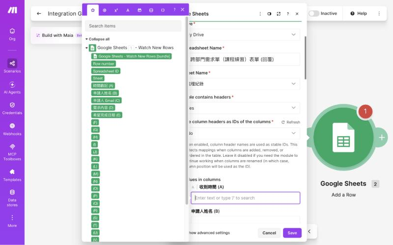
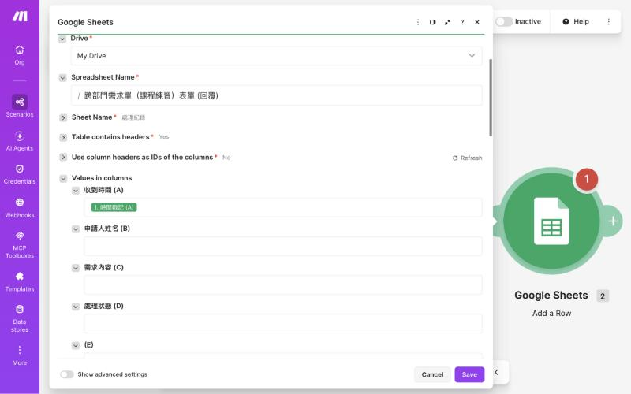
做完會看到：前三個空格裡各有一個綠色小標籤，例如「1. 時間戳記 (A)」，前面的 1 表示它來自第一個模組；處理狀態裡是你打的「已收到」。
幫流程取名字、存檔
- 點畫面左上角的流程名稱（一開始是「New scenario」或「Integration Google Sheets」）。
- 改成
需求單自動記錄（練習），按 Enter。 - 按畫面下方工具列的 Save。
做完會看到：畫面跳出「The scenario was saved.」（流程已儲存）。
執行一次
- 按畫面左下角的 Run once（執行一次）。
- 回到試算表，打開「處理紀錄」分頁。
做完會看到：Make 畫面上兩個模組都出現綠色勾和一個小圓圈「1」，表示各處理了一筆；處理紀錄的第 2 列寫著王小美那張單的時間、「王小美」、她的需求內容和「已收到」。
再執行一次，看它會不會重複記
- 回到 Make，再按一次 Run once。
- 再看一次「處理紀錄」。
做完會看到：第一個模組照樣跑了，第二個模組沒有動；處理紀錄還是只有王小美那一列。
第 13 步就是前面說的「Make 記得自己讀到哪一列」：王小美那一列上次已經讀過，這次沒有新的列，所以後面的動作不會做。等有人再送出一張需求單，下一次執行時，處理紀錄才會多一列。
到這裡，每收到一張需求單，就有一條你自己建的流程接手，替禾光記下處理進度。現在它還是你按一次才跑一次。畫面右上角寫著「Every 15 minutes」（每 15 分鐘）和「Inactive」（未啟用）：把開關打開，Make 就會每 15 分鐘自己檢查一次，這是免費方案最短的間隔。練習階段先讓它關著，免得點數在你沒注意時一直用掉。
常見問題
處理紀錄一次多了好幾列
如果你在上一篇多填過幾張需求單，Make 第一次執行時會把它們一起讀進來，處理紀錄就會一次多好幾列，這是正常的。之後沒有新的單，再執行也不會再多。
按了 Run once，處理紀錄沒有多一列
多半是第 7 步沒有選 All。在第一個模組上按右鍵，選「Choose where to start」，改選 All 再存檔，然後重新執行一次。
第 10 步點了空格，旁邊的清單沒有「時間戳記」這些欄位
第一個模組選錯分頁了。點第一個模組，確認 Sheet Name 是「表單回覆 1」，不是「處理紀錄」。
第 9 步沒有出現「收到時間、申請人姓名……」這些欄位
處理紀錄的第 1 列可能還沒打表頭，或 Sheet Name 選錯。回到第 1 步確認表頭，再到第二個模組的設定裡按 Values in columns 上方的 Refresh（重新整理）。
不看講義，試著用自己的話回答：
- 這一篇的流程，哪一個模組是「只要……」，哪一個是「就……」？
- 「對應」是在做什麼？如果把「需求內容」對應到了「申請人 Email」，處理紀錄會變成什麼樣子？
- 第二次按 Run once，為什麼處理紀錄沒有多一列？
接下來
處理紀錄裡現在只寫著「已收到」，還沒有人知道這張單該交給行政、設計還是行銷。5-2 要做第 2 步：先在 AI 對話工具裡把「判斷部門」的指示試到穩定，再放進這條流程，讓 Make 每收到一張單，就請 AI 判斷一次。放進流程的那一篇，會帶你申請一把讓 Make 使用 Gemini 的金鑰。